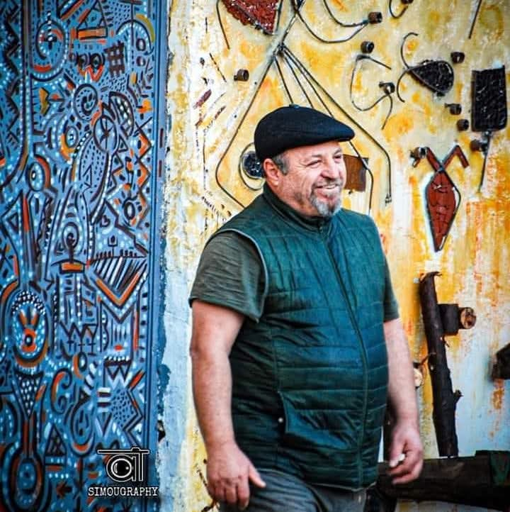

À propos
Un mot de sa fille

Bonjour, je suis la fille de Djamel Metref.
Depuis toujours, mon père a une plume que j’admire énormément. Il a cette façon bien à lui de mettre des mots sur les choses simples de la vie, sur les souvenirs, les émotions, les montagnes, les gens et le temps qui passe.
J’ai voulu créer ce site pour que ses textes ne restent pas simplement dispersés entre quelques publications, ou partagés seulement avec ceux qui ont la chance de tomber dessus, mais qu’ils aient leur propre maison. Un endroit où chacun pourra venir les lire, les découvrir, y revenir, et peut-être s’y reconnaître un peu.
Pour moi, Djamel Metref n’est évidemment pas seulement l’auteur de ces textes. C’est mon père, mon exemple et une grande source d’inspiration.
C’est un homme profondément généreux, calme, curieux, toujours prêt à partager ce qu’il sait. Il m’a appris énormément sur la vie, souvent sans même s’en rendre compte. Il m’a transmis son amour des livres, des mots, de la réflexion, et surtout cette curiosité qui pousse à vouloir comprendre le monde un peu mieux.
Quand je pense à mon enfance, je pense aussi aux livres, aux discussions, aux histoires, aux questions parfois interminables, et à toutes ces petites choses qu’il m’a transmises au fil des années.
Une partie de la personne que je suis aujourd’hui vient certainement de là.
Alors ce site, c’est avant tout une façon de lui rendre hommage, mais aussi de partager avec vous une petite partie de son univers.
Et, quelque part, de lui dire merci.
Bienvenue dans Les mots d’un montagnard.
Qui est Djamel Metref ?
Djamel Metref est ingénieur en informatique de formation.
Après plus de trente années passées dans le monde de l’informatique, des systèmes et de la technologie, il a choisi, à l’heure de la retraite, de ralentir un peu et de revenir vers quelque chose de plus ancien, de plus simple et surtout de plus proche de lui : ses racines.
Celles du Djurdjura.
C’est aujourd’hui au cœur de ces montagnes qu’il retrouve le temps d’observer, de se souvenir, de lire, de réfléchir et surtout d’écrire.
Mais la poésie et les mots ne sont pas arrivés avec la retraite. Ils ont toujours été là, et semblent même appartenir à une histoire familiale plus ancienne.
Djamel Metref écrit aussi sur les traces de son père, Amer Metref, lui-même amoureux des lettres et doté d’une très belle plume.
Une passion qui, quelque part, s’est transmise de père en fils, puis, à sa manière, jusqu’à nous.
Entre souvenirs d’enfance, réflexions sur la société, amour, famille, nature, identité, nostalgie et scènes du quotidien, Djamel Metref écrit simplement sur ce qu’il voit, ce qu’il ressent et ce que la vie lui inspire.
Les mots d’un montagnard rassemble aujourd’hui ces textes.
Comme une petite bibliothèque ouverte.
Comme une mémoire que l’on construit poème après poème.
Et surtout comme la trace d’un homme qui, depuis toujours, aime les mots.